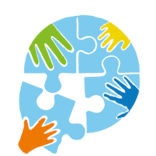

CRIA - Child Rights in Action
“Child Rights in Action (CRIA) is a global initiative committed to advancing meaningful and structured participation of children in shaping the policies, systems, and decisions that affect their lives.”
Children as Actors Transforming Society (CATS) was founded by Jonathan Levy and included an annual international forum integrating Korczak’s ideas and practices aimed at giving a voice to children so that they could be actors and have a role in the necessary changes of our society. Participation is a fundamental right in the UN Children Rights Convention (UNCRC art.12-15, 17). Each year CATS had a different, important and relevant theme and the intergenerational participants very actively engaged in many different activities including community groups, workshops and performances they created…..
In 2019, in Jonathan’s words, CATS was reborn as CRIA- Child Rights in Action.
CRIA “Vision: A world where children are recognized as whole individuals, respected as knowledge-holders, trusted as decision-makers, and included as co-creators of the systems that shape their lives.
We envision just, inclusive, and participatory societies where the voices, dreams, and lived experiences of children guide collective action at every level.”
CRIA now offers online and offline programs. Our website will continually update you on CRIA and of course you can go to the CRIA website too. https://withcria.com As a participant and/or Development Team member of CATs and CRIA, with what I have seen, heard and experienced, I endorse CRIA without hesitation. Maheen, one of the young members of our Korczak Association has already been actively engaged with CRIA
Following is an article Maheen wrote about a campaign she was working on and sent to me.
Child Labour
I enjoy going to and participating in CRIA because Children’s voice is extremely valued and we talk about really important issues and everyone gets a turn to speak. I really like how it revolves around Korczak’s sayings of the importance and value of a child. Together at CRIA, people from all over the world join and we make amazing things possible!
This year a few children are starting to develop their own campaigns. I have decided to focus my campaign on the issue Child Labor. Child Labor is a large problem in the world. It is where children are forced to hard and continuous labor (work) in terrible and unsafe circumstances. They also miss out on the chance of getting an education in their life. Child labor refers to any child under 12 doing work in these circumstances.
Child labor is a large problem in the world, and even though it’ll be hard to completely stop it there are ways we can decrease it. They include;
Spreading an awareness (like this article), social media posts, webinars
Supporting organisations that work to help endChild Labor
Trying our best to not buy products from companies that do support Child Labor, and using alternatives to them.
Maheen
If you have had any experiences about Child Labour are interested in finding more about it and/or would like to join Maheen’s campaign, please send your name and email and any questions you have about this by clicking here.
"Child rights in action need to be lived every day in your life, here, now and everywhere."